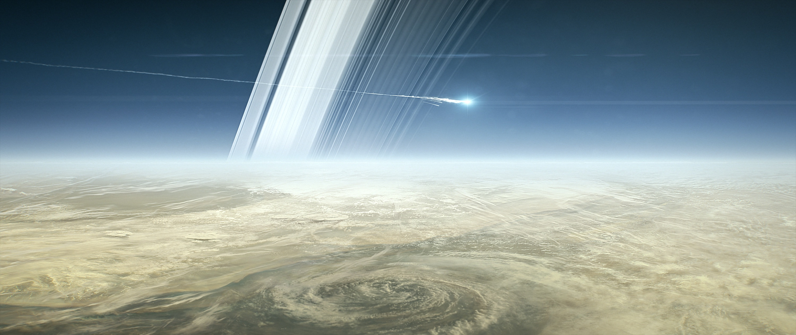

Великий фінал: останній політ крізь кільця#
3D Re-fly the Cassini mission from Earth in 1997 to it spectacular end at Saturn in 2015. NASA/JPL-Caltech/VTAD

Image: Illustration of Cassini breaking up in Saturn's atmosphere on 15 September 2017, concluding its 13-year mission exploring the gas giant, its rings and moons. Credit: ©ESA/NASA/JPL-Caltech. Source
Cassini's Grand Finale:
Місія Кассіні-Гюйгенс#
Був вересень 2017 року, і один з найамбітніших проєктів людства наближався до свого драматичного фіналу...
15 жовтня 1997 року. Мис Канаверал здригнувся від потужного реву двигунів ракети-носія Titan IV-B. У її верхній частині, захищений обтічником, знаходився космічний апарат вартістю 3,26 мільярда доларів – результат співпраці NASA та Європейського космічного агентства. Місію назвали на честь двох великих астрономів: італійця Джованні Кассіні та голландця Крістіана Гюйгенса ("місія Кассіні-Гюйгенс").

Монтаж Кассіні — Гюйгенс. Висота апарату становить 6.8 м, ширина - 4 м. (Public Domain), Посилання

Наукові прилади і основне обладнання «Кассіні». (Public Domain), Посилання
Попереду був довгий шлях. Щоб дістатися до Сатурна, Кассіні мав здійснити складний гравітаційний маневр, використовуючи притягання інших планет. Апарат двічі пролетів повз Венеру, потім повернувся до Землі, і нарешті, отримавши додатковий імпульс від Юпітера, попрямував до свого головного призначення. Разом з Кассіні подорожував зонд Гюйгенс, якому належало здійснити історичну місію - посадку на Титан, найбільший супутник Сатурна та другий за розміром у Сонячній системі.
Кассіні найближче підлетів до Юпітера 30 грудня 2000 року і зробив багато наукових вимірювань, зокрема в ході багатомісячного прольоту Юпітера зроблено 26 000 зображень. Це дало змогу створити найдетальніший глобальний кольоровий "портрет" Юпітера, у якому найдрібніші деталі мають розмір приблизно 60 км. Головною знахідкою обльоту, яка була анонсована 6 березня 2003 року, була циркуляція атмосфери Юпітера.

Image: Проходження Іо на тлі Юпітера 01.01.2001. Автор: NASA/JPL/University of Arizona - http://photojournal.jpl.nasa.gov/catalog/PIA02879, (Public Domain).

Image: Світлина прольоту повз Юпітер. Автор: NASA/JPL/Space Science Institute - Це зображення внесене у каталог Лабораторії реактивного руху Національного управління з аеронавтики і дослідження космічного простору США, ID: PIA04866, (Public Domain).
За сім років Кассіні подолав відстань у 3.5 мільярда кілометрів, щоб 1 липня 2004 року увійти в історію як перший штучний супутник Сатурна. На момент прибуття Кассіні, відстань між Землею та Юпітером була 1.5 мільярди кілометрів. Тобто відстань подолана під час подорожі була більше ніж у два рази більшою за відстань між планетами на момент прибуття.
Це було лише початком. За півроку (25 грудня 2004) від апарату відділився зонд "Гюйгенс", який здійснив те, що раніше здавалося неможливим – увійшов в атмосферу та здійснив посадку на поверхню Титана, найбільшого супутника Сатурна, 14 січня 2005 року.

Image: Поверхня Титана. Світлина, зроблена зондом "Гюйгенс". Автор: ESA/NASA/JPL/University of Arizona - http://photojournal.jpl.nasa.gov/catalog/PIA07232, (Public Domain).
Існувала проблема, яка могла завадити отримати нам дані із апарата Гюйгенс. Після запуску Кассіні було виявлено, що дані, надіслані зондом Гюйгенс на орбітальний апарат Кассіні (а потім повторно передані на Землю), будуть здебільшого нечитабельними. Причина полягала в тому, що смуга пропускання електроніки для обробки сигналів була занадто вузькою, і очікуваний доплерівський зсув між посадковим модулем і базовим кораблем виводив сигнали за межі діапазону системи. Таким чином, приймач Кассіні не зміг би отримувати дані від Гюйгенса під час спуску на Титан. На щастя, цю проблему вдалось "обійти" змінивши дві орбіти Кассіні на три коротші.
Результати випробувань загальної теорії відносності Ейнштейна
10 жовтня 2003 року наукова група місії оголосила результати випробувань загальної теорії відносності Альберта Ейнштейна, виконаних за допомогою радіохвиль, що передаються космічним зондом Кассіні. Вчені-радіологи виміряли зміну частоти радіохвиль до та від космічного корабля, коли вони проходили близько до Сонця. Відповідно до загальної теорії відносності, такий масивний об’єкт, як Сонце, змушує простір-час викривлятися, внаслідок чого частота пучка радіохвиль, що виходить із його гравітаційної ями, зменшується, а частота радіохвиль, що поширюються в гравітаційну яму, збільшується.
Попередні тести з використанням радіохвиль, переданих космічними зондами «Вікінг» і «Вояджер», узгоджувалися з розрахунковими значеннями загальної теорії відносності з точністю до однієї тисячної. Точніші вимірювання експерименту космічного зонда Cassini підвищили цю точність приблизно до однієї частини з 51 000. Ці дані підтверджують загальну теорію відносності Ейнштейна.
Протягом наступних тринадцяти років Кассіні став невтомним дослідником системи Сатурна. Він виявив гейзери водяного льоду на супутнику Енцелад, що вивергаються з-під його крижаної поверхні (це відкриття змусило вчених переглянути свої уявлення про можливість існування життя в Сонячній системі), відкрив сім нових місяців на орбіті Сатурна, допоміг виміряти та дослідити період обертання Сатурна та провів купу інших вимірів. Після 10 років перебування «Кассіні» на орбіті, 3 квітня 2014 року, НАСА повідомило, що виявлено докази існування великого підземного океану рідкої води на Енцеладі, супутнику Сатурна. На думку вчених, підземний океан свідчить про те, що Енцелад є одним із найімовірніших місць у Сонячній системі, де може існувати життя.

Image: Підсумки 10 років перебування Кассіні в системі Сатурна. За цей час було виконано 2 млн команд, передано 514 Гб даних, відкрито 7 супутників, здійснено 132 близьких обльоти супутників Сатурна, участь у місії прийняли науковці з 26 країн, було пройдено 2 млрд миль після прибуття апарата, опубліковано 3039 наукових робіт, здійснено обліт 206 орбіт, зроблено 332 000 світлин, здійснено 291 включення двигуна. Автор: NASA/JPL-Caltech, (Public Domain), Посилання

Зміна кольору шестикутника Сатурна: 2013 і 2017 роки. Автор: NASA/JPL-Caltech/Space Science Institute/Hampton University - Catalog page, (Public Domain), Посилання

Сатурн. Світлина, зроблена "Кассіні", 2016. Автор: Credit: NASA/JPL-Caltech/SSI, (Public Domain), Посилання
У 2017 році місія наближалася до завершення – паливо майже вичерпалося. Щоб запобігти можливому падінню апарата на супутники Сатурна, де потенційно могло існувати життя, було прийнято рішення про контрольоване завершення місії та спрямування Кассіні в атмосферу планети.
22 квітня 2017 року Кассіні розпочав фінальну фазу. Апарат здійснив 29 прольотів між Сатурном та його внутрішніми кільцями – в область, де ще не літав жоден космічний апарат. Кожен такий проліт був ризикованим через можливе зіткнення з частинками кілець. 15 вересня 2017 року о 14:55 за київським часом Кассіні увійшов в атмосферу Сатурна. До останньої секунди апарат передавав наукові дані на Землю, поки не згорів в атмосфері планети.
Останні фотографії передані Кассіні: https://science.nasa.gov/missions/cassini/cassinis-final-images
Додаткові джерела
NATIONAL AERONAUTICS AND SPACE ADMINISTRATION (NASA) - Cassini-Huygens Saturn Arrival, Press Kit June 2004, PDF: https://www.jpl.nasa.gov/news/press_kits/cassini-arrival.pdf